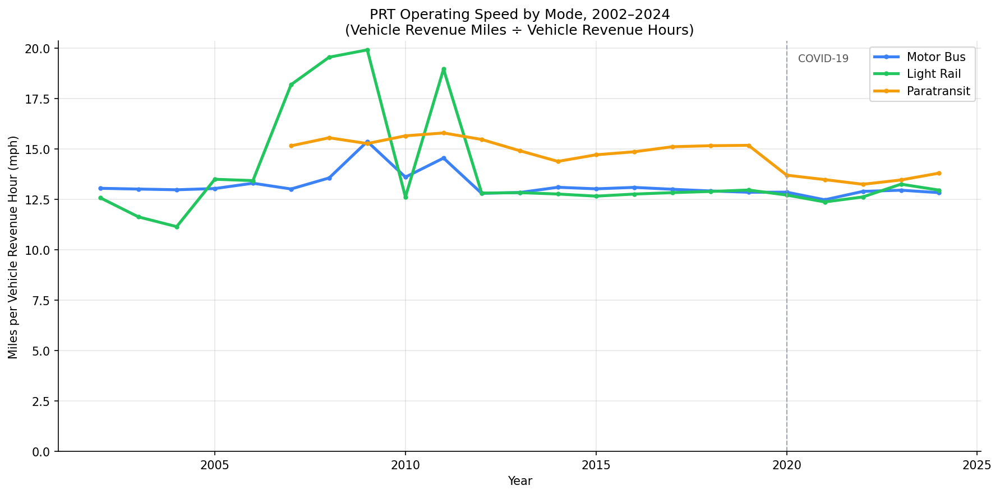
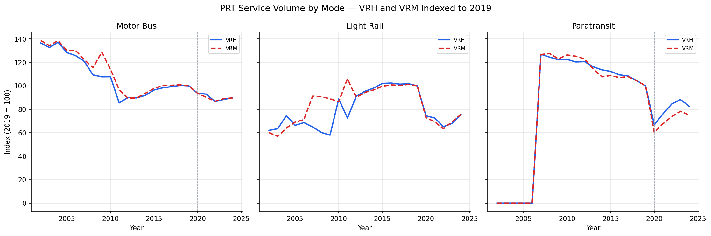

Analysis
52 - VRH and Vehicle Revenue Miles
Coverage: 2002-01 to 2025-12 (from ntd_ridership).
Built 2026-06-05 17:39 UTC · Commit 1196b7f
Page Navigation
Analysis Navigation
Data Provenance
flowchart LR
52_vrh_with_miles(["52 - VRH and Vehicle Revenue Miles"])
t_ntd_ridership[("ntd_ridership")] --> 52_vrh_with_miles
05_ntd_ridership[["NTD Ridership ETL"]] --> t_ntd_ridership
u1_05_ntd_ridership[/"data/ntd-monthly-ridership/December 2025 Complete Monthly Ridership (with adjustments and estimates)_260202.xlsx"/] --> 05_ntd_ridership
classDef page fill:#dbeafe,stroke:#1d4ed8,color:#1e3a8a,stroke-width:2px;
classDef table fill:#ecfeff,stroke:#0e7490,color:#164e63;
classDef dep fill:#fff7ed,stroke:#c2410c,color:#7c2d12,stroke-dasharray: 4 2;
classDef file fill:#eef2ff,stroke:#6366f1,color:#3730a3;
classDef api fill:#f0fdf4,stroke:#16a34a,color:#14532d;
classDef pipeline fill:#f5f3ff,stroke:#7c3aed,color:#4c1d95;
class 52_vrh_with_miles page;
class t_ntd_ridership table;
class u1_05_ntd_ridership file;
class 05_ntd_ridership pipeline;
Findings
Findings: VRH and Vehicle Revenue Miles
Summary
PRT's bus operating speed has been remarkably stable at roughly 12.8–13.0 mph over the full 2002–2024 record, suggesting that traffic congestion has not measurably degraded fixed-route service speeds system-wide. Bus and light rail VRH and VRM have both declined sharply since 2002 (~35% and ~40% respectively), but because they track each other closely, the speed ratio has stayed flat. The most notable speed shift is in paratransit, which slowed from 15.2 mph in 2019 to 13.8 mph in 2024 (−9%), likely reflecting longer or more complex trip patterns.
Key Numbers
| Mode | 2019 mph | 2024 mph | Change |
|---|---|---|---|
| Motor Bus | 12.85 | 12.83 | −0.2% |
| Light Rail | 12.96 | 12.95 | −0.0% |
| Paratransit | 15.18 | 13.80 | −9.1% |
Observations
- Bus speed is flat over 22 years. Motor bus VRM/VRH has barely moved — from 13.0 mph in 2002 to 12.8 mph in 2024. The COVID dip in 2021 (12.47 mph) reversed quickly. There is no evidence of a long-run speed decline.
- Service volume fell substantially. Bus VRH fell from ~2.2 M hours in 2002 to ~1.47 M in 2024, a 34% drop. VRM fell in nearly equal proportion, keeping speed constant. This means the system is running fewer hours and fewer miles — a contraction in service, not a slowdown.
- Light rail is similarly stable. Speed fluctuated 11–13.5 mph in early years (likely tied to service restructuring around the South Hills extensions) and has settled near 13 mph since 2006.
- Paratransit speed decline is the standout finding. ACCESS paratransit went from 15.2 mph in 2019 to 13.8 mph in 2024. Over the same period VRH grew faster than VRM (VRH up ~24% from 2019 baseline vs VRM up ~25%), so the decline is small but consistent. This may reflect shifts toward more complex trip routing or longer average trip distances.
- Paratransit VRH and VRM both grew sharply post-2007 (when NTD began reporting them) to become a large fraction of agency-wide service hours by 2024 (~24% of all VRH).
Caveats
- NTD data is agency-reported and aggregated annually; it cannot distinguish speed changes on specific corridors or times of day.
- Paratransit data (VRH and VRM) is not available before 2007, so the long-run speed trend for that mode is incomplete.
- The Incline (IP) is excluded from speed analysis; its 2.3 mph figure reflects extremely short, near-vertical track rather than congestion or service efficiency.
- "Speed" here is an average across all trips for the year and does not capture peak-hour vs. off-peak variation.
Validation
- Data source verified.
ntd_ridershipcolumns confirmed againstDATA_DICTIONARY.md; mode codes validated against Analysis 50 constants. - Temporal scope. All data filtered to 2002–2024 calendar years; paratransit zeros before 2007 treated as no service and excluded from speed calculations (VRH = 0 guard).
- Plausibility. Bus speeds of 12–13 mph are consistent with published literature for U.S. urban bus systems. Paratransit speeds (13–15 mph) are plausible for demand-responsive service with deadheading.
- Surprising result investigated. The paratransit speed decline (−9%) was checked against raw VRH and VRM year-by-year; the trend is consistent across 2020–2024 and not attributable to a single outlier year.
- Known relationships verified. VRH and VRM track each other for bus and rail as expected (stable speed). No reversals noted.
Output

operating speed trends by mode over time.

indexed vehicle revenue hours and miles over time.
No interactive outputs declared.
per-mode operating speed (VRM/VRH) by year.
Preview CSV
summary speed statistics by mode.
Preview CSV
Methods
Methods: VRH and Vehicle Revenue Miles
Question
How has PRT's operating speed (vehicle revenue miles per vehicle revenue hour) changed over time, and does that speed vary by mode? Specifically, has bus speed declined in recent years — a signal of growing traffic congestion or service restructuring — relative to light rail and paratransit?
Approach
- Load monthly VRH and VRM from
ntd_ridershipfor PRT (ntd_id = 30022) for 2002–2024. - Aggregate to annual totals by mode.
- Compute average operating speed in miles per hour:
mph = vrm / vrh(only wherevrh > 0). - Plot speed (mph) by mode over time — one line per mode — to reveal trends.
- Plot indexed VRH and VRM for each mode (base = 2019 = 100) to show whether hours and miles diverged post-pandemic.
- Produce a summary table of mph at key years (2007, 2019, 2024) and percent change.
- Exclude the Incline (IP) from speed comparisons because its extremely short track and near-vertical geometry make the mph figure uninformative for congestion analysis.
Data
ntd_ridership(ntd_id,mode,month,vrh,vrm): PRT-only rows filtered to modes MB, LR, DR, IP.- Rows with
vrh IS NULLorvrh = 0are excluded from speed calculations. - Calendar year aggregates: sum VRH and VRM across all months for a given mode-year.
Output
output/speed_by_mode.csv— annual VRH, VRM, and mph by mode (2002–2024)output/speed_trends.png— time-series of mph by mode (bus, rail, paratransit), 2002–2024output/vrh_vrm_index.png— indexed VRH and VRM for each mode (2019 = 100)output/mode_speed_summary.csv— mph at key years and % change 2019→2024
Source Code
|
Sources
| Name | Type | Why It Matters | Owner | Freshness | Caveat |
|---|---|---|---|---|---|
| ntd_ridership | table | Primary analytical table used in this page's computations. | Produced by NTD Ridership ETL. | Updated when the producing pipeline step is rerun. | Coverage depends on upstream source availability and ETL assumptions. |
Upstream sources (1)
|
|||||